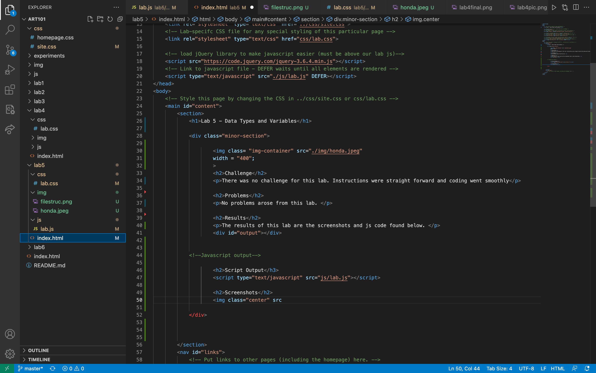
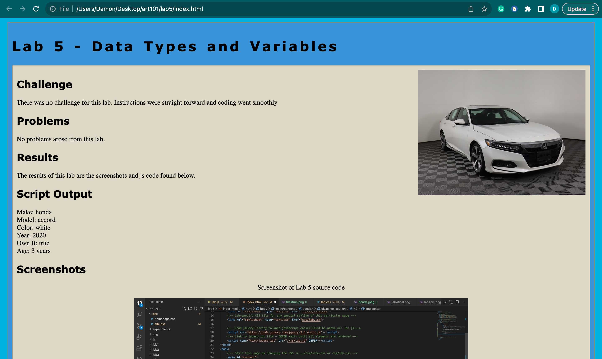

Lab 5 - Data Types and Variables
Challenge
There was no challenge for this lab. Instructions were straight forward and coding went smoothly
Problems
No problems arose from this lab.
Results
The results of this lab are the screenshots and js code found below.
Script Output
Screenshots
Screenshot of Lab 5 source code
Screenshot of local working lab 5
